Cityscape Abu Dhabi
Abu Dhabi’s municipal pavilion. I built it around one line.Antoni Gerges, Creative Director, Brand & Experiential · AntBrush
Four public bodies and fourteen projects had to share one floor. I gave it one line, and a ceiling of light.
Read more
The pavilion of Abu Dhabi’s municipal government at Cityscape Abu Dhabi, the capital’s property show: the Department of Municipal Affairs and Transport with the municipalities of Abu Dhabi City, Al Ain City and Al Dhafra Region. Hall 8, three days, 18 to 20 April 2017.
The concept, the exhibition design, the build and its management were mine, through AntBrush. Built with Divine Creations, Dubai.
The brief was a list: fourteen projects to show, with their models and screens, a majlis and two meeting rooms. Community markets, boat landings, a platform for building permits.
I answered with one line. A maroon carpet runs from the open corner to a tower. Two wings turn around it. Over it hangs a ceiling of spheres that rise, fall and change colour.
Seven community markets: Al Raha Gardens, Shakhbout City, Mohammed bin Zayed City, Yas Island, Al Shamkha City, Al Wathba City and Bani Yas. Souq Al Zaafarana; the central market of Madinat Zayed; the local market of Ghayathi; boat and jet ski landings at Al Bahya and Al Sadr; and two systems for building permits.
They were the client’s projects, shown as models and on screens.
26 March 2017: two options. One was a red block on two floors. The other had the two wings and the tower.
28 March 2017: the final design. The line arrives, and the stand turns white and maroon. 11 April: the builder’s drawings. 14 April, 2 pm: the hall opens to us. 18 April: the doors open.
The model on this page was made for this portfolio. Its floor is the builder’s own plan, line for line. Its heights are the contract’s. Its upper floor follows the stand as built.
The films and photographs of the build are my own, taken on my phone. Every picture on this page is shown whole.
One line
across the floor.
The stand, built again from its own plan. Walk in.
The plan
Fourteen projects on one floor. One line crosses it, from the open corner to a tower.
The walls
Two wings, two storeys high, turn around the line. The tower stands where it ends.
The projects
One base, built as the builder drew it: the stand’s rosette on its sides, its project’s name on the front. Then every base takes its place.
The ceiling
Over the line, a ceiling of spheres. Each one rises, falls and changes colour.
Inside
Walk the line under the light, to the models at its end.
Two answers, then one line.
26 March: a red block on two floors. 28 March: the line from the open corner to the tower, and the stand that was built. The ceiling of spheres was in every option; on the 28th it moved over the line.
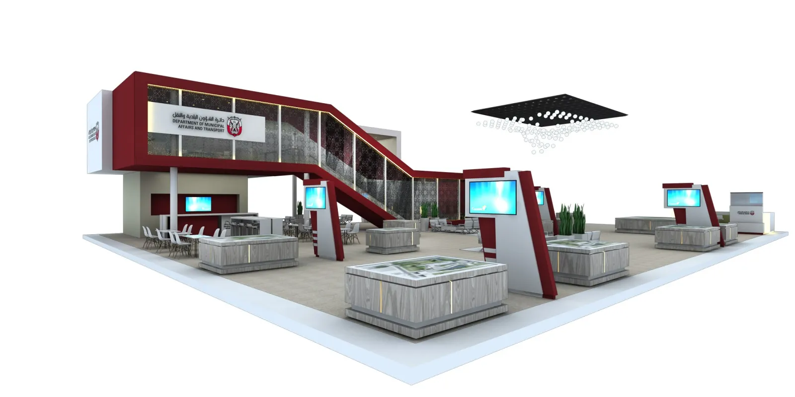
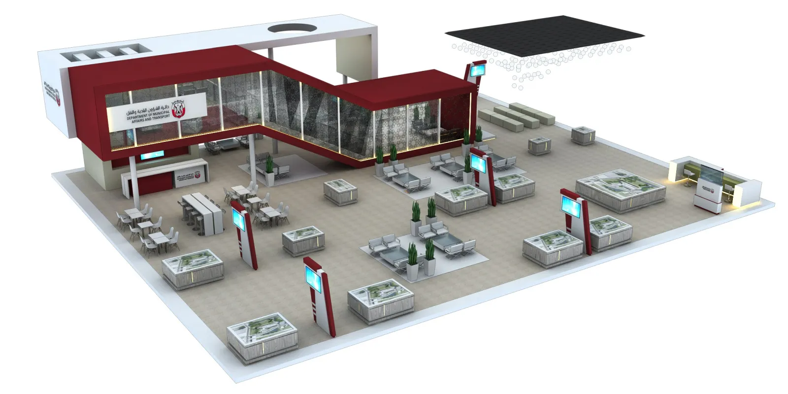
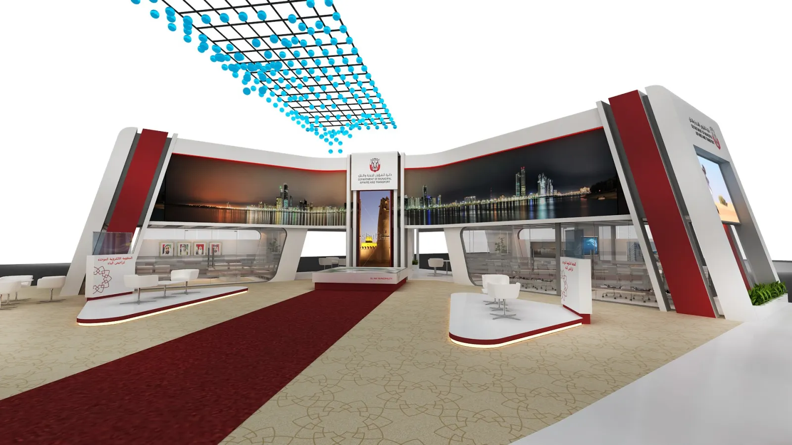
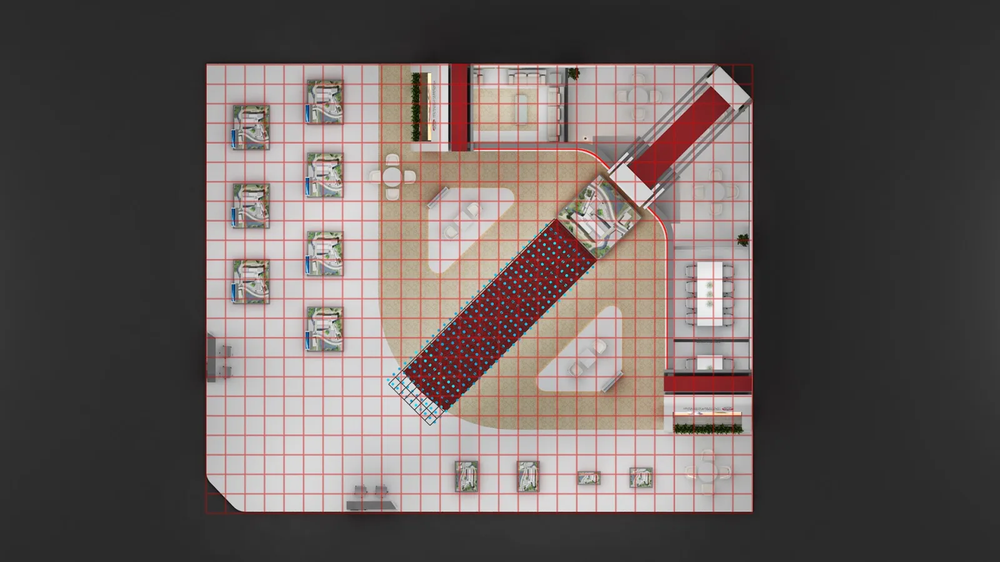
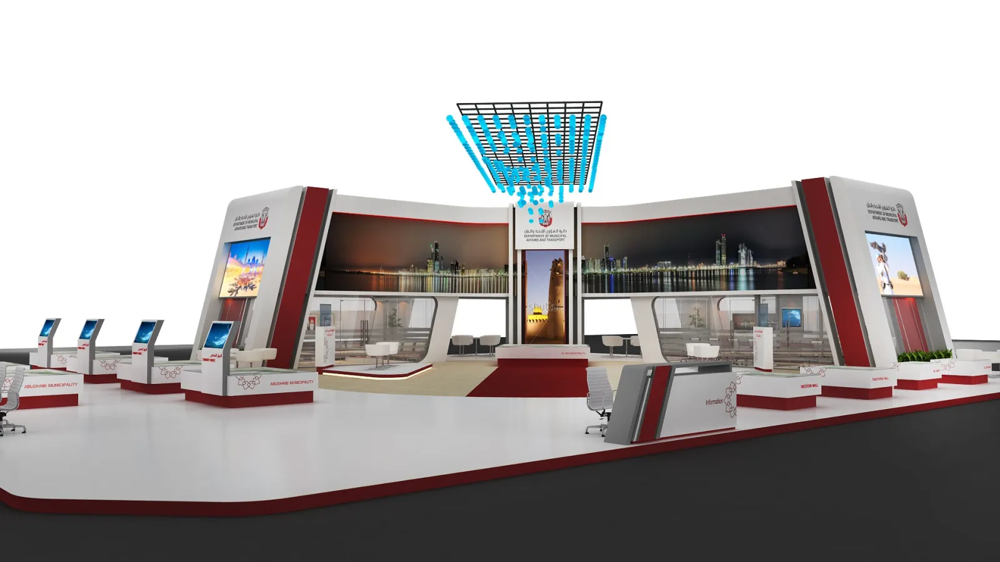
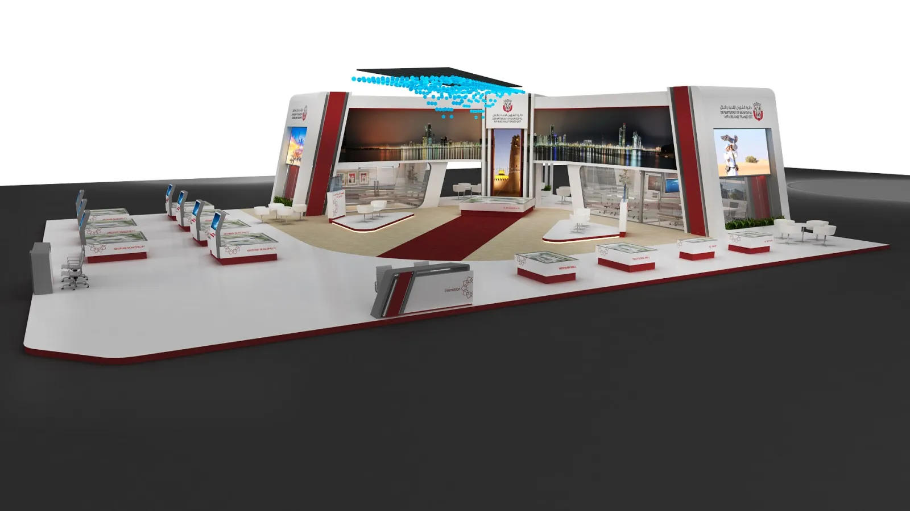
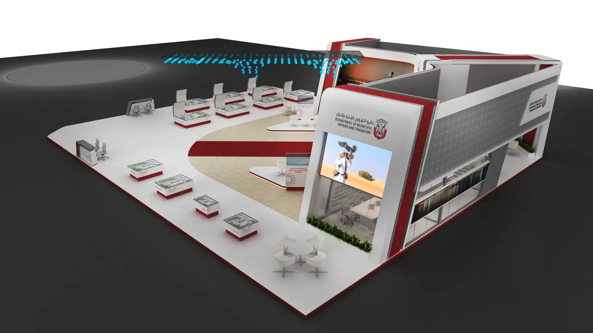
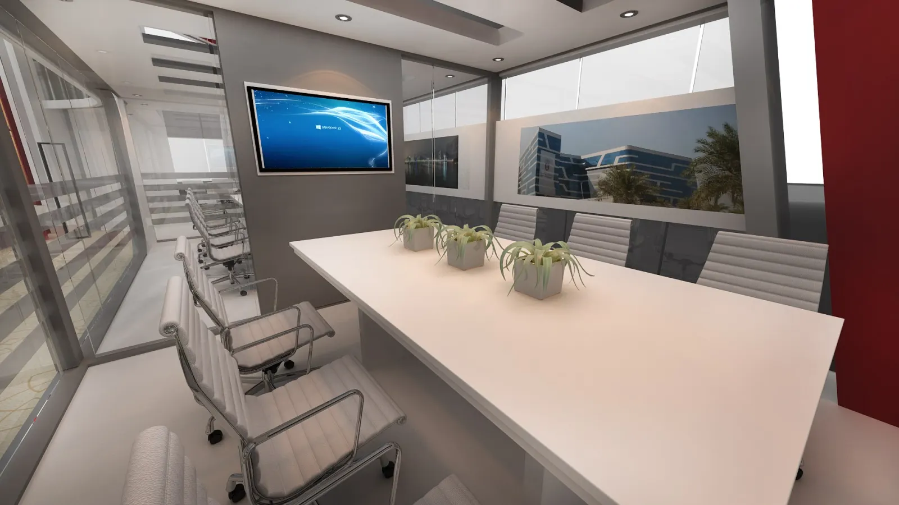
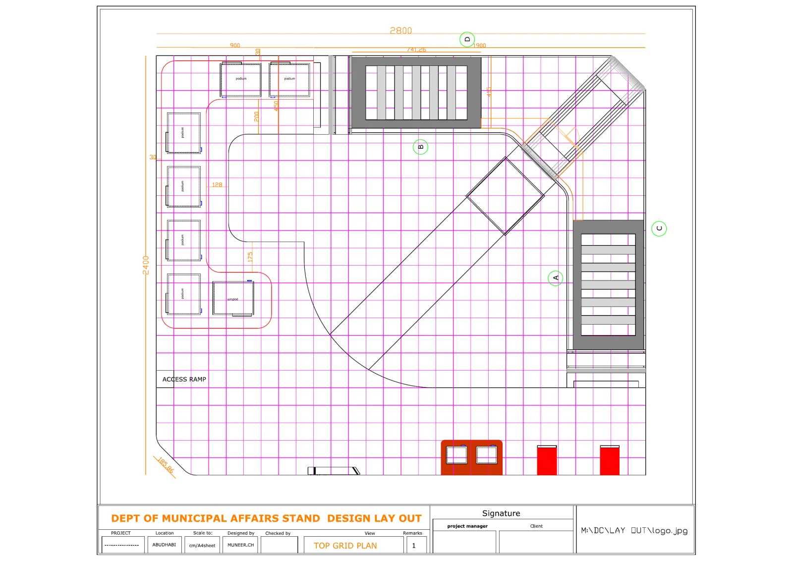
Built in three days.
In the hall at 2 pm on 14 April. Ready on the 17th. Open on the 18th.
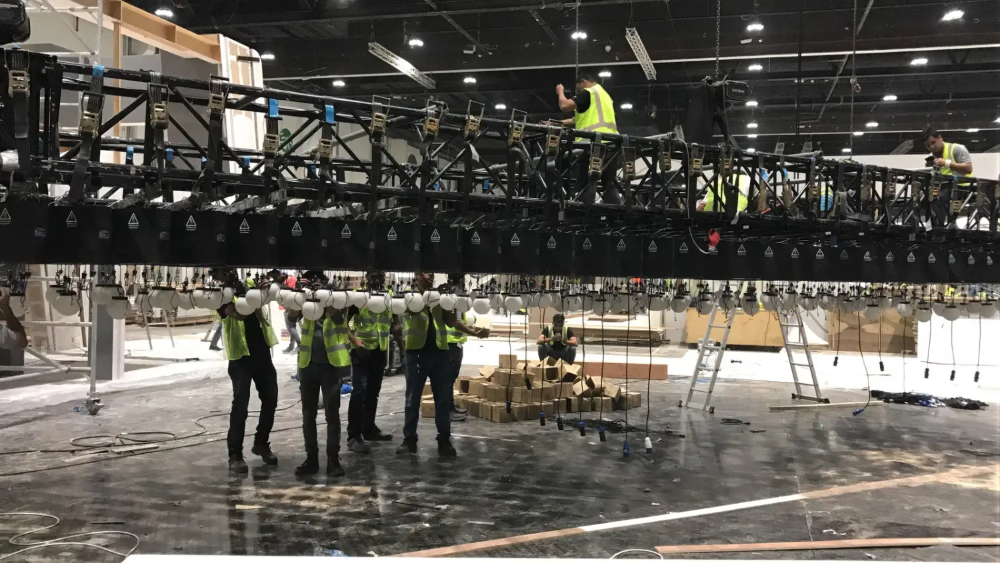
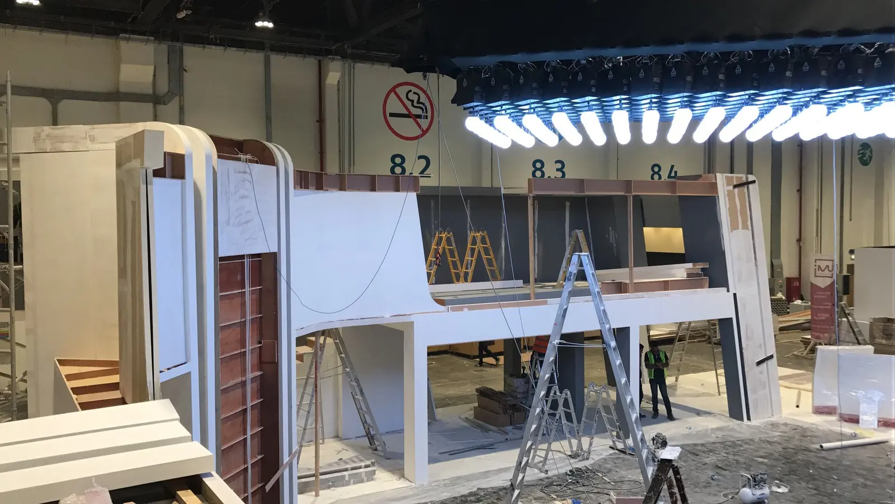
The result.
04 · In the recordsSource: the organiser’s access letter, 12 April 2017, and the purchase order for the build.
More figures
Sources: the stand builder’s contract of 6 April 2017; the list of project names, 15 April 2017; the four invoices of 18 April 2017.
Creative Director, Brand & Experiential
Built with Divine Creations, Dubai.